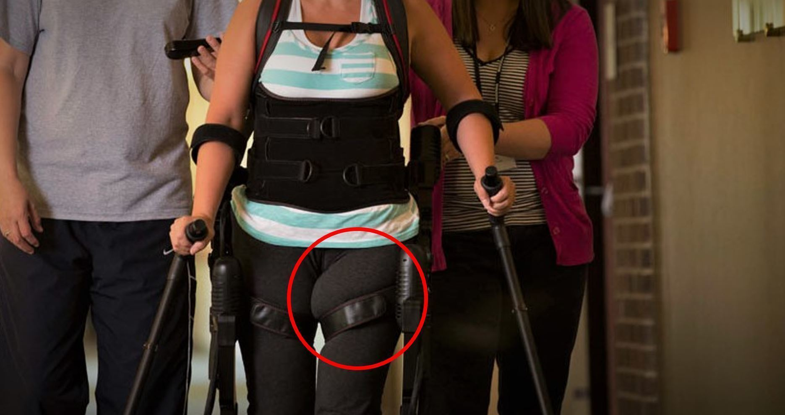
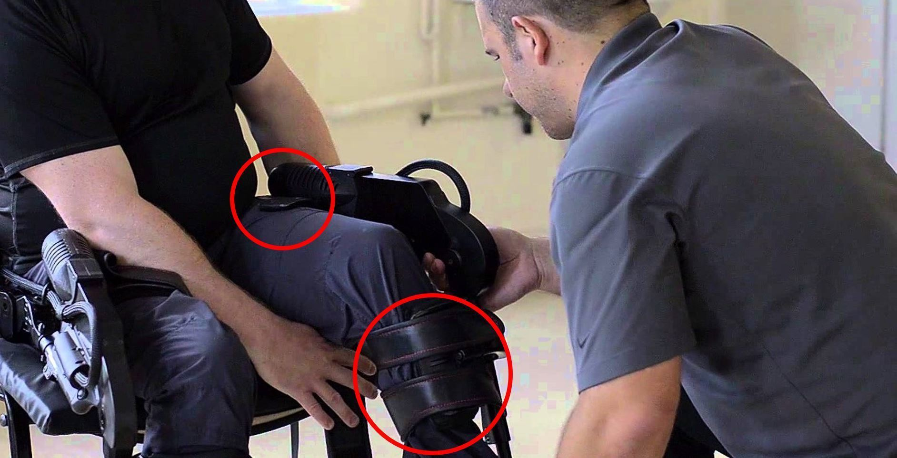

The Ekso GT, built by Ekso Bionics, is a pioneering robot that gives spinal chord injury and stroke survivors the ability to stand and walk. The GT is a wearable device, meaning there are key interfaces for bracing the pilot which provide stability and control during standing, sitting, and gait. Through continuous product iterations, the company aims to engineer these interfaces to be as accomodating and comfortable as possible for as many different pilots, and as easy to adjust as possible for the physical therapist. Rethinking and redesigning the bracing at the upper leg became a project of mine during my internship.

To understand the user needs, I went through full storyboarding processes, drawing information from ethnographic research on pilot experiences, and interviews with physical therapists. From available and extrapolated data, I explored and modeled human physiology, capturing the form and physiological behavior of a wide range of potential pilots. After identifying the causes of discomfort and pressure along the thigh brace, I collaborated with the clinical team to recognize areas for improvement, and to provide feedback on my conceptual solutions.

Throughout the design proccess, I worked with SolidWorks surfacing tools and complex assemblies, creating novel geometries for 3D printing and testing while maintaining the integrity of the existing bracing attachements to the current robot. I prototyped and studied a wide variety of concepts before converging on the final form, thoroughly documenting information learned from each iteration. When selecting and creating additional components for the final system, I brought in considerations for material selection and manufacturability, attempting to optomize effectiveness without breaking the bank.
My work on this project was commended by upper management for addressing pertinent areas which needed improvement. In addition to being comfortable for a wide range of pilots, my final design simplified areas of particular mechanically compelxity, easing use for physical therapists and potentially cutting manufacturing costs.
I'm not allowed to share specifics or pictures of my designs, but please reach out if you have questions!